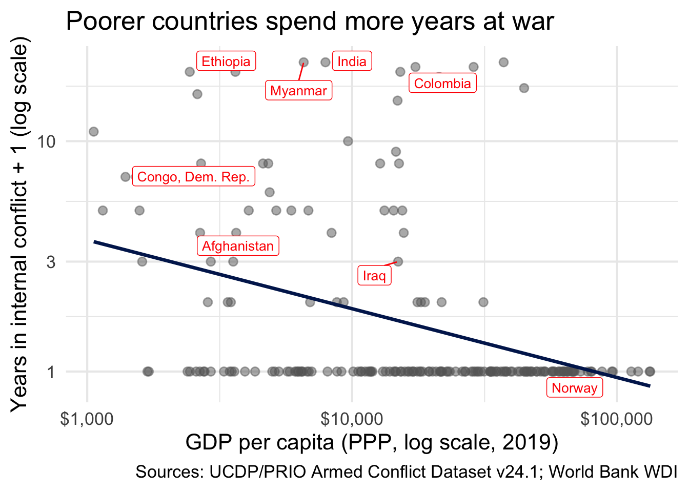
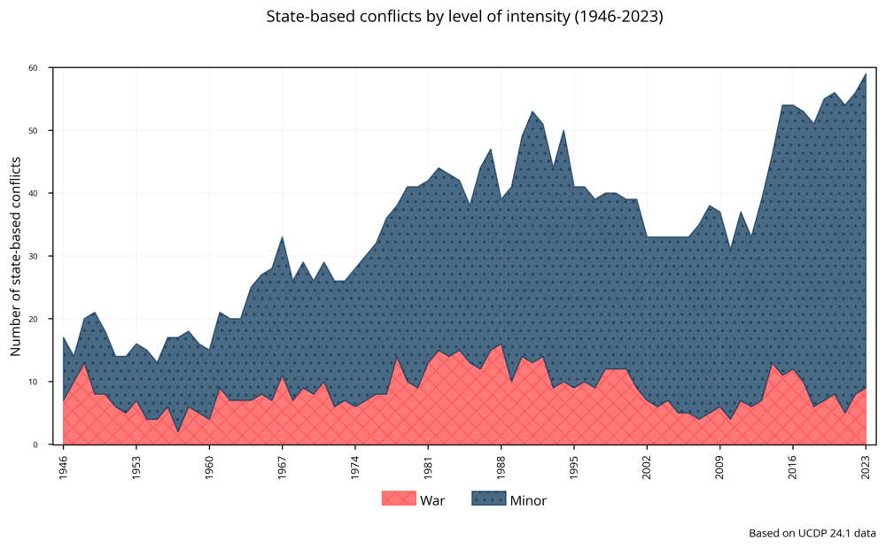
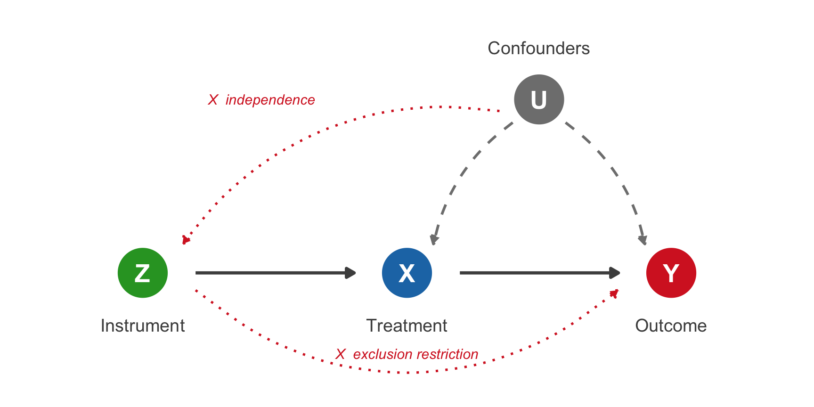

Conflict and Development I
The Causes of Civil War
Agenda
- The Poverty-Violence Correlation
- Two Mechanisms: Opportunity Cost and Rapacity
- The Endogeneity Problem
- Miguel, Satyanath, and Sergenti (2004)
- Instrumental Variables in Practice
. . .
Final Project Design due TONIGHT
From Crime to Conflict
Last Week: The State and Security
- Crime can mobilize citizens (Bateson)
- But policing can alienate them (Weaver and Lerman)
. . .
Today: Civil war
- Civil war as failure of internal security provision
- Violence on a scale that reshapes economies and institutions
What Is a Civil War?
What makes something a “civil war”?
. . .
Every definition is contested. One that is widely used is the Uppsala/PRIO definition:
“A contested incompatibility which concerns government and/or territory where the use of armed force between two parties, of which at least one is the government of a state, results in at least 25 battle-related deaths”
. . .
Note what this excludes: one-sided violence against civilians, non-state conflict between militias, anything below 25 deaths
How Common Is Civil War?

Civil War by the Numbers
- Civil wars have caused three times as many deaths as wars between states since WWII (Fearon and Laitin, 2003)
- In sub-Saharan Africa, 27% of country-years experienced civil conflict between 1981 and 1999 (Miguel, Satyanath, and Sergenti, 2004)
- Overwhelmingly concentrated in the poorest countries
The Poverty-Violence Correlation
The Empirical Pattern
Arguments That Poverty Causes Violence
- Opportunity cost: when you have nothing to lose, fighting is cheap
- State weakness: poor states cannot buy off or suppress rebels
- Grievance: deprivation and inequality breed resentment
Arguments That It Does Not
- Bad institutions may cause both poverty and war
- Geography could cause both
- The causation could go in the other direction: conflict causes poverty
. . .
Today we focus on two mechanisms that formalize the “yes” side
Two Mechanisms
What Is Opportunity Cost?
The opportunity cost of doing something is what you give up by doing it
. . .
- The opportunity cost of joining a rebel group is everything else you could be doing instead
- Earning wages, spending time with your family, going to school, farming your land
- All of that is increasing in outside wages: the better the economy, the more you give up by fighting
Opportunity Cost and Conflict
- If wages are $1/day, joining a militia doesn’t cost you much
- If wages are $50/day, you are giving up a lot
- Poverty lowers the opportunity cost of fighting \(\rightarrow\) more people choose violence
. . .
This is the core intuition linking poverty to conflict
Dal Bo and Dal Bo: A Model
A formal model of conflict between producers and predators:
- People choose between two activities: produce (earn wages) or fight (take what others produce)
- When wages fall, producing becomes less attractive
- Fighting becomes relatively better \(\rightarrow\) more insurrection
But Wait: The Rapacity Effect
- So far: poverty makes fighting cheaper \(\rightarrow\) more conflict
- But what about the opposite?
- More resources could mean more things to fight over
- Oil is discovered, land becomes more valuable \(\rightarrow\) groups fight harder to capture it
- This is the rapacity effect: wealth increases can ALSO cause conflict
. . .
So which is it? Does more wealth cause peace or war?
It Depends: Can You Pillage It?
- Labor-intensive wealth (agriculture, manufacturing):
- You can’t steal someone’s harvest without a workforce: the value is in the labor
- A good economic shock to labor intensive products \(\rightarrow\) higher wages \(\rightarrow\) higher opportunity cost \(\rightarrow\) peace
- Capital-intensive wealth (oil, minerals, diamonds):
- You CAN seize a mine or an oil field: the value is in the ground
- A good economic shock to capital intensive products \(\rightarrow\) more valuable prize to capture \(\rightarrow\) conflict
The Theoretical Takeaway
- Poverty \(\rightarrow\) low opportunity cost \(\rightarrow\) insurrection (opportunity cost channel)
- Wealth \(\rightarrow\) more to fight over \(\rightarrow\) conflict (rapacity channel)
- Which one dominates depends on the economic structure of the country
. . .
But how do we prove any of this? We can’t randomly make countries poor
The Endogeneity Problem
Three Problems with a Naive Regression
- Reverse causality: conflict destroys income, so we confuse the effect with the cause
- Omitted variables: institutions, ethnic tensions, geography may cause both poverty and conflict
- Anticipation: if people expect instability, they stop investing \(\rightarrow\) income falls before conflict starts
. . .
We need something that changes income but has no direct effect on conflict
Instrumental Variables
The Core Intuition
Think of \(X\) (income) as having two parts:
- Clean variation: changes in income driven by forces that have nothing to do with conflict
- Dirty variation: changes in income tangled up with confounders, reverse causality, anticipation
. . .
OLS uses all the variation in \(X\): clean and dirty mixed together
. . .
An instrument \(Z\) lets us extract only the clean part. If \(Z\) moves \(X\) but has absolutely no relationship with \(Y\) except through \(X\), then the piece of \(X\) that \(Z\) explains is pure signal
An Example
Does education (\(X\)) increase earnings (\(Y\))?
- Dirty variation: motivated people get more education AND earn more: is it the schooling or the motivation?
- Observation: people who grew up closer to a college tend to get more education (Card, 1993)
- Proximity to a college (\(Z\)) shifts education for geographic reasons, not because of ability or motivation
- The part of education explained by distance is clean: free of the motivation confound
- Use only that clean part \(\rightarrow\) causal effect of education on earnings
IV as a DAG

The Three Conditions
For \(Z\) to be a valid instrument for \(X\) in estimating \(X \rightarrow Y\):
- Relevance: \(Z\) actually moves \(X\)
- “Does the instrument shift the treatment?”
- Exclusion restriction: \(Z\) has no direct arrow to \(Y\)
- “The ONLY reason \(Z\) matters for \(Y\) is because it changes \(X\)”
- Independence: \(U\) has no arrow to \(Z\)
- “Confounders don’t affect the instrument”
How 2SLS Works
Two-Stage Least Squares:
- Stage 1: Regress \(X\) on \(Z\)
- This gives us \(\widehat{X}\): the part of \(X\) that is explained by \(Z\)
- \(\widehat{X}\) contains only clean variation; the dirty part is left in the residuals
- Stage 2: Regress \(Y\) on \(\widehat{X}\)
- We threw away the contaminated variation and kept only the clean part
- What’s left is the causal effect of \(X\) on \(Y\)
Miguel, Satyanath, and Sergenti (2004)
The Setting
- Sub-Saharan Africa: the region with the most civil wars since 1960
- Also the poorest and most agriculturally dependent region
- Agriculture is overwhelmingly rain-fed: only ~1% of cropland irrigated
- When rainfall drops, harvests fail, and the economy contracts
The Research Question
Do negative rainfall shocks (droughts) increase the probability of civil conflict?
- 41 sub-Saharan African countries, 1981-1999
- The instrument is rainfall variation: less rain \(\rightarrow\) lower agricultural output \(\rightarrow\) lower economic growth
- They use rainfall to isolate the clean part of income variation
Why Rainfall Works as an Instrument
- Relevance: droughts destroy harvests \(\rightarrow\) lower income
- Exclusion: rainfall affects conflict only because it changes income
- Independence: nobody controls the weather
\[\text{Rainfall} \longrightarrow \text{Economic Growth} \longrightarrow \text{Conflict}\]
First Stage: Does Rainfall Predict Growth?
- Current and lagged rainfall growth significantly predict economic growth
- A drought leads to roughly a 1-2 percentage point decline in GDP growth
Second Stage: The Causal Effect
The decline in economic growth caused by drought increases conflict:
- A 5 percentage-point decline in rainfall-driven growth increases the likelihood of civil conflict by roughly 12 percentage points
- The effect comes through lagged growth: last year’s drought predicts this year’s conflict
Does the Exclusion Restriction Hold?
The instrument is only valid if rainfall affects conflict exclusively through income. But what if:
- Drought \(\rightarrow\) roads deteriorate \(\rightarrow\) harder to move troops \(\rightarrow\) conflict changes for logistical reasons, not income
- Drought \(\rightarrow\) disease outbreaks \(\rightarrow\) displacement \(\rightarrow\) conflict over new territory
- Drought \(\rightarrow\) crop failure \(\rightarrow\) migration to neighboring regions \(\rightarrow\) conflict there
. . .
The authors argue these channels are small relative to the economic channel. You cannot test this statistically: you have to argue it
Connecting Back to Theory
- Rainfall affects agricultural income: labor-intensive
- You can’t pillage labor so this is a shock to the opportunity cost channel
- Drought \(\rightarrow\) harvest falls \(\rightarrow\) wages fall \(\rightarrow\) opportunity cost of fighting falls \(\rightarrow\) conflict rises
- MSS provides evidence for the Dal Bo and Dal Bo mechanism
IV in Practice
IV in R
library(ivreg)
# OLS: uses all variation in growth (clean + dirty)
ols <- lm(conflict ~ growth, data = mss)
# IV: uses only the part of growth driven by rainfall
iv <- ivreg(conflict ~ growth | rainfall, data = mss)
summary(iv, diagnostics = TRUE)When Is IV Useful?
- When you suspect endogeneity: reverse causality, omitted variables, anticipation
- When you can find a variable that is:
- Relevant (actually moves \(X\))
- Excludable (only affects \(Y\) through \(X\))
- Independent (not driven by confounders)
- The hardest part is always the exclusion restriction: you can’t test it, you have to argue it
Implications
- Economic shocks cause civil war: the opportunity cost mechanism is supported
- Consistent with the labor-intensive channel from Dal Bo and Dal Bo
- Policy implication: economic interventions (crop insurance, irrigation, diversification, aid during droughts) could help prevent conflict
Discussion
From Crime to Civil War
Last class we talked about crime and the state:
- Crime emerges when the state fails to provide internal security
- Civil war: some people actively fight the state
. . .
Is there a continuum from crime to organized violence to civil war? Or are these fundamentally different phenomena?
Next Class
Conflict and Development II: The Consequences of War
- Blattman and Annan (2010): “The Consequences of Child Soldiering”
- Miguel, Saiegh, and Satyanath (2011): Civil War Exposure and Violence (on the Soccer Pitch)